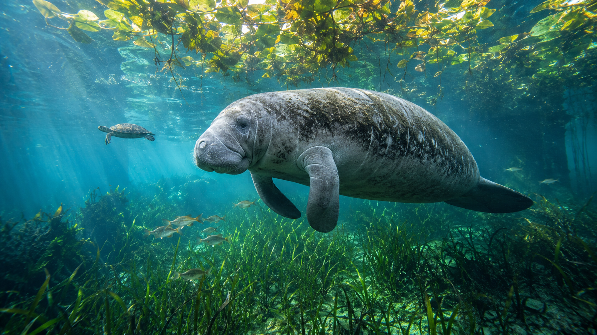
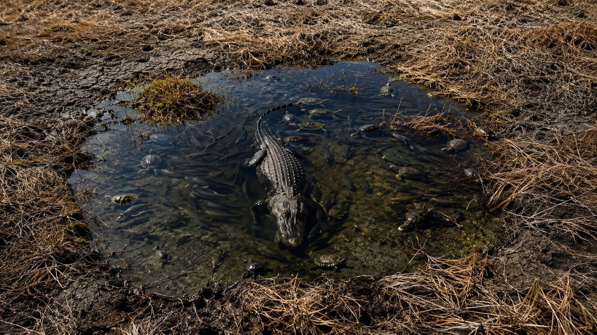

Hold that question as you work. By the end, you should be able to answer it with real examples.
Start here. Learn the words you will use today.
Look at the image below. It shows a real Florida wetland — the kind of place we've talked about all year. Before you read anything, just look. Notice what's alive, what's moving, what depends on what.

There's no wrong answer here. Scientists always start by looking carefully and asking questions. We'll return to this image at the end of the lesson.
You've seen these words before — but today we're bringing them all together. Tap each card to flip it and review the definition. These are the big ideas from our whole year of science.
Copy this sentence carefully into your science notebook:
"Every living thing in an ecosystem depends on the other parts around it — change one part, and everything else feels it."
Now learn the main science idea.

Think about a Florida wetland. Fish eat the algae. A heron eats the fish. An alligator eats the heron. If someone drains the pond, the fish disappear — and so does the heron. That's interdependenceInterdependenceWhen living things depend on each other to survive.: every living thing is connected to the ones around it.
Scientists call this connected community an ecosystemEcosystemAll the living and nonliving things in a place, and the ways they affect each other.. A pond is an ecosystem. So is a forest, a tide pool, and a city park. Each one runs on connections.
Where it's hot and rainy, you get thick jungle. Where it's cold and dry, you get sparse tundra. ClimateClimateThe typical weather of a place over many years. — the long-term weather pattern of a place — decides which plants can grow. And plants decide which animals can survive there.
Florida's wet summers flood the sawgrass prairies. That flooding creates the food and shelter that dozens of bird species need. Change the rain pattern, and those species have nowhere to go.
Real-World Connection: In the Everglades, water levels controlled by rainfall — and by human-built canals — determine whether the whole ecosystem thrives or struggles.
Organisms have adaptationsAdaptationA trait that helps a living thing survive in its environment. — traits shaped by their environment over many generations. A spoonbill's flat bill sweeps fish from shallow water. A mangrove's tangled roots hold firm in soft, flooded soil.
But environments can change faster than living things adapt. When we drain wetlands, cut forests, or change the climate, species with no time to adjust can disappear. Humans are one of the biggest forces of change on Earth — and one of the only forces that can choose to protect what's left.
Real-World Connection: National parks like the Everglades exist because people decided that protecting these connections mattered. That's conservation in action.
Everything in nature is connected. Weather shapes climate. Climate shapes which plants grow. Plants shape which animals survive. Animals shape the soil and water. And humans can change — or protect — any part of the system.
A change in one part causes a chain of changes through the rest. This is a system: a set of parts that depend on each other to work.
Curious? Go Deeper
Scientists call this a trophic cascade — when one species causes a ripple of changes through its whole ecosystem. The wolf story in Yellowstone is one of the most famous examples ever recorded.
The Everglades has its own version. Alligators dig "gator holes" — deep pits that hold water during the dry season. These holes become refuges for fish, birds, and turtles when the rest of the wetland dries up. Without alligators, many other species would struggle to survive. One animal — hundreds of others depending on its behavior.
This is why scientists say losing a single species can matter far beyond that one animal. Every thread in a web holds others up.
Now test the idea yourself.
The Scenario: It is the dry season in the Florida Everglades. Almost no rain has fallen. Water levels are dropping fast. The sawgrass prairies are drying out.
Your job is to trace what happens next — one step at a time. Use what you've learned all year. Work through each step in your science notebook.
Draw the Starting Web: Draw a simple food web showing at least 4 living things from a Florida wetland. Include: a plant, a fish, a bird, and one more of your choice. Draw arrows to show who eats what. Label each one.
The Water Drops: Cross out or circle the plant in your drawing. Water levels have dropped so far that most water plants are dying. Trace the effect: which living thing in your web is affected next? Write one sentence explaining what happens and why.
Keep Following: Keep tracing the chain. What happens to the next animal? And the one after that? Fill in the Effects Chain table below — one row for each step, until you've traced at least 3 effects.
The Human Decision: You are a park ranger. Water levels are falling. You can (A) build a small barrier to hold water in one section of the marsh, or (B) do nothing and let the drought run its course. Which would you choose, and why? Write 2–3 sentences.
| Step | What Changed? | What Happened Next? Why? |
|---|---|---|
| 1 | Water drops → plants die | |
| 2 | ||
| 3 | ||
| 4 |
A scientist doesn't just observe — they explain. Think about specific details from your food web and effects chain. You'll write your explanation in the Assignment tab.
Tell the story of what happened in your wetland from beginning to end — starting with the drought, ending with the last thing that changed. Use your notes and drawing to help.
Think through each question on your own. Talk it over in your mind — or with a family member — before moving on.
Standards Reflection: This year you learned science ideas that connect to real Florida standards (CPALMS) and national science standards (NGSS). As you build your concept map, think about these big ideas:
• Life Science: How do organisms survive, adapt, and depend on each other? (SC.3.L.15.1, SC.3.L.17.1, SC.3.L.17.2)
• Physical Science: What are properties of matter, and how does energy cause change? (SC.3.P.8.1, SC.3.P.9.1, SC.3.P.10.1)
• Earth Science: How do weather patterns and natural hazards affect living things? (SC.3.E.6.1)
• Nature of Science: How do scientists use evidence to explain the world? (SC.3.N.1.1, SC.3.N.1.7)
Check what you understand.
Show what you learned.
🔍 Part A — Identify the Connections
For each topic below, write one real-world example showing how that topic connects to something else in nature.
🚀 Part B — Short Answer
Answer in complete sentences. Use your vocabulary words where they fit.
The Everglades is one of the most connected ecosystems in the world — but also one of the most threatened. What do you think would happen if water levels kept dropping year after year?
What do you think?
💡 Start with: "I think that if water levels kept dropping, the Everglades would…"
What did you learn that supports your thinking?
💡 Start with: "I know this because the lesson showed that…"
Why does that make sense?
💡 Start with: "This makes sense because when one part of an ecosystem changes…"
📚 Try to use at least two of these words: interdependence, ecosystem, food web, adaptation, human impact
🎨 Part C — Draw Your Connection Web
In your science notebook, draw a Connection Web for any real ecosystem you choose. Show at least 5 living or nonliving things connected by labeled arrows. Each arrow should explain the relationship — don't just draw lines.
Submit your work on Canvas using one of these options:
Make sure your submission includes all of these: